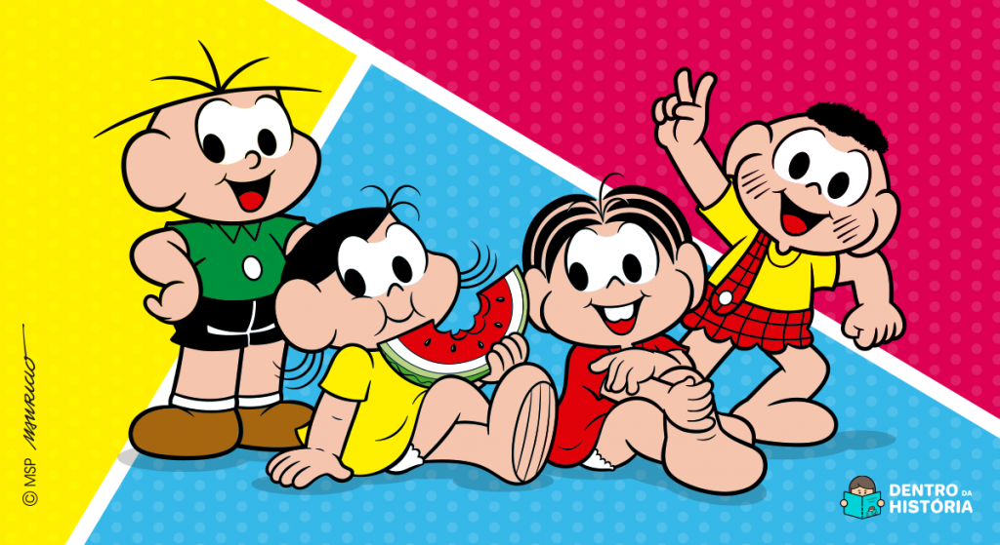
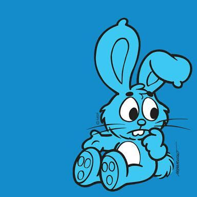

Porque o coelhinho da monica é azul?

- Recriação visual definitiva para os quadrinhos
- Simbolismo e contraste com a Mônica
- Baseado em um coelho real, mas reformulado no desenho
- Sansão é quase um “personagem” próprio
- Cor azul combina com o perfil da Mônica

- Vendas
- Consistência em diferentes versões e mídias
- Brincadeiras e referências no universo narrativo
- Ele também é estilizado em produtos licenciados
- Ele também é estilizado em produtos licenciados